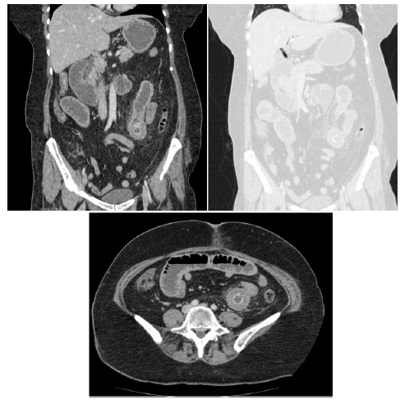
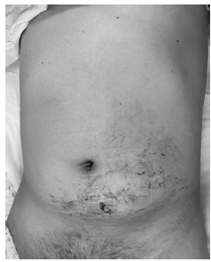
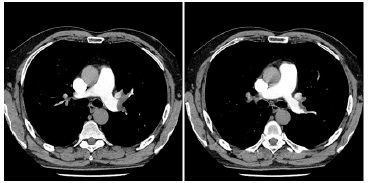
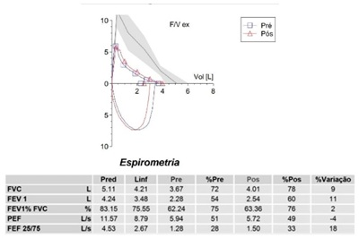

Questão 1 · Política Nacional de Saúde do Trabalhador e da Trabalhadora PNSTT · Saúde do Trabalhador · 4000181220Conceitos gerais A Portaria nº 1.823, de 23 de agosto de 2012, institui a Política Nacional de Saúde do Trabalhador e da Trabalhadora e dispõe sobre a estruturação da Rede Nacional de Atenção Integral à Saúde do Trabalhador (RENAST). Com base nessa portaria e suas atualizações, considere as afirmativas a seguir. I. Os serviços de atenção primária em saúde, urgência e emergência devem realizar a noti cação dos agravos relacionados ao trabalho no Sinan. II. Institui que a atenção primária em saúde deve auxiliar no reconhecimento e identificação dos potenciais riscos e impactos (perfil de morbi-mortalidade) à saúde dos trabalhadores. III. A atenção primária em saúde deve prover atendimento, nos casos pertinentes de agravos relacionados ao trabalho, no entanto, o médico da atenção primária não possui competência para emitir atestados e assinar relatórios sobre o caso. IV. Como forma de promover a articulação das redes de informações sobre agravos relacionados ao trabalho, é obrigatório que as declarações e atestados emitidos possuam o número do código internacional de doenças (CID). Assinale a alternativa correta.
A Somente as afirmativas I e II são corretas.
B Somente as afirmativas I e IV são corretas.
C Somente as afirmativas III e IV são corretas.
D Somente as afirmativas I, II e III são corretas.
E Somente as afirmativas II, III e IV são corretas.
Questão 2 · NR32 Segurança e Saúde no Trabalho em Serviços de Saúde · 4000181219A Norma Regulamentadora 32 (NR-32) tem por nalidade estabelecer as diretrizes básicas para a implementação de medidas de proteção à segurança e à saúde dos trabalhadores dos serviços de saúde, bem como daqueles que exercem atividades de promoção e assistência à saúde em geral. A respeito da NR-32 e suas atualizações, assinale a alternativa correta.
A Em toda ocorrência de acidente envolvendo riscos biológicos, com ou sem afastamento do trabalhador, deve ser emitida a Comunicação de Acidente de Trabalho - CAT.
B O empregador precisa informar aos trabalhadores da área da saúde as vantagens das vacinas contra poliomelite, rubéola e influenza.
C Compete ao Programa de Controle Médico de Saúde Ocupacional (PCMSO) a aplicação de vacinas obrigatórias aos seus trabalhadores, cabendo ao sindicato de trabalhadores o monitoramento do estado vacinal desses trabalhadores.
D Trabalhadoras gestantes não podem trabalhar em áreas com possibilidade de exposição a gases ou vapores anestésicos, como em salas de centro cirúrgico.
E Os documentos que compõem o Programa de Gerenciamento de Riscos deverão ser guardados, em local restrito, sendo disponibilizados aos trabalhadores apenas em situações excepcionais.
Questão 3 · Política Nacional de Saúde do Trabalhador e da Trabalhadora PNSTT · Normas Regulamentadoras · 4000181218Saúde do Trabalhador A saúde do trabalhador é um dos temas que a Lei nº 8.080, de 19 de setembro de 1990, e suas atualizações regulamentam. Com base nos conhecimentos a respeito do tema, considere as afirmativas a seguir. I. A Lei nº 8.080/1990 institui que a elaboração de normas técnicas e o estabelecimento de padrões de qualidade para promoção da saúde do trabalhador são uma atribuição conjunta dos sindicatos patronais das indústrias, pecuária e mineração. II. Entende-se por saúde do trabalhador, para ns dessa lei, um conjunto de atividades que se destina, através das ações de vigilância epidemiológica e vigilância sanitária, à promoção e proteção da saúde dos trabalhadores, assim como visa à recuperação e reabilitação da saúde dos trabalhadores submetidos aos riscos e agravos advindos das condições de trabalho. 26 / 27 III. Institui a saúde do trabalhador como um dos objetivos do Sistema Único de Saúde, abrangendo a participação na normatização, fiscalização e controle dos serviços de saúde do trabalhador nas instituições e empresas públicas e privadas. IV. Institui que a articulação das políticas e programas, a cargo das comissões intersetoriais, abrangerá, em especial, as seguintes atividades: alimentação e nutrição, saneamento e meio ambiente, vigilância sanitária e farmacoepidemiologia, recursos humanos, ciência e tecnologia e saúde do trabalhador. Assinale a alternativa correta.
A Somente as afirmativas I e II são corretas.
B Somente as afirmativas I e IV são corretas.
C Somente as afirmativas III e IV são corretas.
D Somente as afirmativas I, II e III são corretas.
E Somente as afirmativas II, III e IV são corretas.
Questão 4 · Política Nacional de Saúde do Trabalhador e da Trabalhadora PNSTT · Normas Regulamentadoras · 4000181217Saúde do Trabalhador A Reforma Trabalhista e a Lei das Terceirizações, ambas aprovadas em 2017, homologaram a terceirização para atividades nalísticas, de caráter temporário e emergencial. No campo da saúde, essas normativas acentuaram a contratação de pessoas físicas constituídas por meio de pessoas jurídicas especialmente para esse m, processo chamado de “pejotização”. (...) O pro ssional, ao constituir-se como pessoa jurídica, passa a assumir, além das atribuições do exercício da função, os impostos e outras despesas da “empresa” que “administra”, como o recolhimento de taxas das notas scais, entre outros encargos. E ainda receberá por hora trabalhada, sem direito a benefícios, como férias, 13º salário, licenças médicas, e somente terá direito à proteção social mediante sua própria contribuição à previdência e após decorridos prazos de carência. Esses aspectos podem apresentar-se vantajosos para os tomadores ou contratantes, pela desoneração da folha de pagamento e também pela agilidade com que se realiza o provimento, razões essas que contribuem para a permanência dessa prática. (...) Esses resultados indicam para a precarização da força de trabalho nas quatro dimensões estabelecidas pela Organização Internacional do Trabalho: i) a dimensão temporal, quanto à possibilidade da perda de vínculo do pro ssional a qualquer momento; ii) dimensão organizacional, quando o trabalhador não domina ou controla as condições de trabalho individuais ou coletivas; iii) dimensão econômica, devido aos baixos salários contratualizados; e iv) dimensão social, na perspectiva da ausência de benefícios previdenciários, desproteção jurídica e inseguridade social. (SILVA, J. F. M.; CARVALHO, B. G.; SANTINI, S. M. L. A pejotização em saúde na macrorregião norte do Paraná e suas implicações com a COVID-19. Revista Eletrônica Gestão & Saúde, v.11. n.3. 2020. Disponível em: <https://doi.org/10.26512/gs.v11i3.32400>.) O texto discorre sobre diversas questões que podem indicar a precarização da força de trabalho em saúde. Com base nesse tema e em relação ao contexto da pandemia de Covid-19, considere as afirmativas a seguir. I. A portaria do Ministério da Saúde nº 2.345, de 2 de setembro de 2020, incluiu a doença causada pelo coronavírus SARS- CoV-2 (Covid-19) na Lista de Doenças Relacionadas ao Trabalho para pro ssionais de saúde, garantindo respaldo para o recebimento de direitos trabalhistas e afastamento, inclusive para trabalhadores terceirizados. II. O anexo LXXX da Portaria de Consolidação nº 5/GM/MS, de 28 de setembro de 2017, institui que qualquer infecção adquirida em ambiente pro ssional é uma doença relacionada ao trabalho, sendo este um direito inalienável do trabalhador, independentemente do local de trabalho, forma de vínculo ou nexo causal entre a exposição do agente causal no ambiente de trabalho. III. Embora o Ministério da Saúde tenha reconhecido a doença causada pelo coronavírus SARS-CoV-2 (Covid-19) como uma doença relacionada ao trabalho, esse reconhecimento foi revogado poucos dias depois, por meio da portaria do Ministério da Saúde nº 2.345, de 2 de setembro de 2020, não gerando respaldo legal aos trabalhadores de saúde que porventura se contaminassem com esse vírus no desempenho profissional. IV. A ausência de benefícios previdenciários, como apontado pelo texto, pode constituir um elemento de precarização da saúde do trabalhador da saúde terceirizado, em especial durante a pandemia de Covid-19, ocasião na qual muitos trabalhadores terceirizados possuíam receio de testar positivo para o SARS-CoV-2 e terem que se afastar do trabalho, gerando perda na sua renda. Assinale a alternativa correta.
A Somente as afirmativas I e II são corretas.
B Somente as afirmativas I e IV são corretas.
C Somente as afirmativas III e IV são corretas.
D Somente as afirmativas I, II e III são corretas.
E Somente as afirmativas II, III e IV são corretas.
Questão 5 · Política Nacional de Saúde do Trabalhador e da Trabalhadora PNSTT · 4000181216A Reforma Trabalhista e a Lei das Terceirizações, ambas aprovadas em 2017, homologaram a terceirização para atividades nalísticas, de caráter temporário e emergencial. No campo da saúde, essas normativas acentuaram a contratação de pessoas físicas constituídas por meio de pessoas jurídicas especialmente para esse m, processo chamado de “pejotização”. (...) O pro ssional, ao constituir-se como pessoa jurídica, passa a assumir, além das atribuições do exercício da função, os impostos e outras despesas da “empresa” que “administra”, como o recolhimento de taxas das notas scais, entre outros encargos. E ainda receberá por hora trabalhada, sem direito a benefícios, como férias, 13º salário, licenças médicas, e somente terá direito à proteção social mediante sua própria contribuição à previdência e após decorridos prazos de carência. Esses aspectos podem apresentar-se vantajosos para os tomadores ou contratantes, pela desoneração da folha de pagamento e também pela agilidade com que se realiza o provimento, razões essas que contribuem para a permanência dessa prática. (...) Esses resultados indicam para a precarização da força de trabalho nas quatro dimensões estabelecidas pela Organização Internacional do Trabalho: i) a dimensão temporal, quanto à possibilidade da perda de vínculo do pro ssional a qualquer momento; ii) dimensão organizacional, quando o trabalhador não domina ou controla as condições de trabalho individuais ou coletivas; iii) dimensão econômica, devido aos baixos salários contratualizados; e iv) dimensão social, na perspectiva da ausência de benefícios previdenciários, desproteção jurídica e inseguridade social. (SILVA, J. F. M.; CARVALHO, B. G.; SANTINI, S. M. L. A pejotização em saúde na macrorregião norte do Paraná e suas implic aç õ e s com a COVID-19. Revista Eletrônica Gestão & Saúde, v.11. n.3. 2020. Disponível em: <https://doi.org/10.26512/gs.v11i3.32400>.) Os autores desse texto realizam a descrição do processo de “pejotização” e seus possíveis impactos para a saúde dos trabalhadores. A “pejotização” encontra espaço legal por meio da forma como o tema é apresentado na Constituição Federal de 1988. Com base nesses conhecimentos, assinale a alternativa que indica, corretamente, o trecho constitucional que cursa sobre a saúde do trabalhador.
A Na seção dos direitos sociais, Art. 7, “São direitos dos trabalhadores urbanos e rurais (...) atendimento à saúde, ofertado pelo empregador, mesmo em modalidades de contratação indireta”.
B Na seção da previdência social, Art. 160, “A previdência social (...) tem como pressuposto, na forma da lei, o (...) atendimento à saúde do trabalhador em todas as esferas de exercício laboral legal”.
C Na seção da saúde, Art. 200, “Ao sistema único de saúde compete, além de outras atribuições, nos termos da lei (...), executar as ações de vigilância sanitária e epidemiológica, bem como as de saúde do trabalhador”.
D Na seção da previdência social, Art. 201, “A previdência social (...) atenderá, na forma da lei , a (...) proteção à saúde do trabalhador em situação de vínculo terceirizado”.
E Na seção da assistência social, Art. 203, “A assistência social será prestada a quem dela necessitar, independentemente de contribuição à seguridade social, e tem por objetivos (...) a promoção da saúde do trabalhador”.
Questão 6 · Políticas de Saúde do Sistema Único de Saúde · Vigilância em Saúde · 4000181215A prática da avaliação é fundamental para identi car se a assistência à saúde ofertada a uma determinada população está sendo compatível com as suas necessidades. Sobre os diferentes enfoques da avaliação, considere as afirmativas a seguir. I. A avaliação de acessibilidade mede o grau de recursos de poder dos usuários e os obstáculos colocados pelos serviços de saúde na busca pela obtenção da atenção. II. A avaliação de cobertura mede o número médio de atendimentos que cada pessoa recebeu frente ao preconizado. III. A avaliação de eficiência mede o quanto as intervenções estão priorizando os grupos sociais com maior necessidade. IV. A avaliação de utilização mede o uso efetivo que se faz de um recurso que se encontra disponível. Assinale a alternativa correta.
A Somente as afirmativas I e II são corretas.
B Somente as afirmativas I e IV são corretas.
C Somente as afirmativas III e IV são corretas.
D Somente as afirmativas I, II e III são corretas.
E Somente as afirmativas II, III e IV são corretas.
Questão 7 · Atenção Primária à Saúde APS no Brasil · 4000181214A Atenção Primária a Saúde (APS) constitui um dos níveis de atenção à saúde mais estratégicos do Sistema Único de Saúde (SUS). Entre as razões que a tornam tão fundamental para o sistema de saúde, considere as afirmativas a seguir. I. É o nível de atenção com maior possibilidade de produção de vínculo com as pessoas. II. É o nível de atenção com grande amplitude e complexidade de ações, desde preventivas a curativas. III. É o nível de atenção mais acessado pela população brasileira. IV. É o nível de atenção mais preparado para atender condições agudas urgentes e emergentes. Assinale a alternativa correta.
A Somente as afirmativas I e II são corretas.
B Somente as afirmativas I e IV são corretas.
C Somente as afirmativas III e IV são corretas.
D Somente as afirmativas I, II e III são corretas.
E Somente as afirmativas II, III e IV são corretas.
Questão 8 · Financiamento do SUS · Conceitos gerais de custeios em saúde · 4000181213Para que o Sistema Único de Saúde cumpra com seus princípios doutrinários e organizativos, seu nanciamento torna-se fundamental. Considerando a lei que regulamenta o nanciamento do SUS, assinale a alternativa que apresenta, corretamente, uma despesa que pode ser custeada com recursos da saúde.
A Ações de assistência social.
B Capacitação do pessoal de saúde do SUS.
C Limpeza urbana e remoção de resíduos.
D Merenda escolar e outros programas de alimentação.
E Pagamento de aposentadorias e pensões.
Questão 9 · Redes de Atenção à Saúde RAS · Rede de Atenção Psicossocial RAPS · 4000181212Atenção Primária à Saúde APS no Brasil A Rede de Atenção à Saúde é definida na Portaria nº 4.279, de 30 de dezembro de 2010, e no Decreto nº 7.508/2011 como o conjunto de ações e serviços de saúde articulados em níveis de complexidade crescente, com a nalidade de garantir a integralidade da assistência à saúde. Em relação às portas de entrada da rede, considere as afirmativas a seguir. I. Atendimento em unidades de saúde da família. II. Atendimento em unidade de pronto atendimento. III. Atendimento em serviços de atenção psicossocial. IV. Atendimento ambulatorial especializado. Assinale a alternativa correta.
A Somente as afirmativas I e II são corretas.
B Somente as afirmativas I e IV são corretas.
C Somente as afirmativas III e IV são corretas.
D Somente as afirmativas I, II e III são corretas.
E Somente as afirmativas II, III e IV são corretas.
Questão 10 · Planejamento em Saúde · 4000181211Considerando a complexidade do SUS, é fundamental que a gestão desse sistema seja organizado e pautado em instrumentos que ofereçam subsídios para a atuação dos gestores de saúde. Em relação aos instrumentos de planejamento do SUS, considere os itens a seguir. I. Relatório de gestão. II. Programação anual de saúde. III. Lei Orçamentária Anual. IV. Lei de Diretrizes Orçamentária. Assinale a alternativa correta.
A Somente os itens I e II são corretos.
B Somente os itens I e IV são corretos.
C Somente os itens III e IV são corretos.
D Somente os itens I, II e III são corretos.
E Somente os itens II, III e IV são corretos.
Questão 11 · Princípios e Diretrizes do SUS na Lei n 80801990 · Lei n 80801990 · Lei n 81421990 · 4000181210O Sistema Único de Saúde tornou-se constitucional a partir de 1988. A implementação de um sistema universal em um país de abrangência continental exige que este seja regulamentado por meio de atos normativos que apresentem suas diretrizes e formas de organização. Assinale a alternativa que apresenta, corretamente, as duas leis que foram consideradas as Leis Orgânicas do SUS.
A Leis nº 196 e nº 198, de 1988.
B Leis nº 80 e nº 90, de 1989.
C Leis nº 8.080 e nº 8.142, de 1990.
D Leis nº 13.502 e nº 13.507, de 1991.
E Leis nº 141 e nº 142, de 2011.
Questão 12 · Princípios e Diretrizes do Sistema Único de Saúde SUS · Princípios e Diretrizes do SUS na Lei n 80801990 · 4000181209O Sistema Único de Saúde (SUS), criado na 8ª Conferência Nacional de Saúde, é pautado em três grandes princípios. Analise a situação descrita a seguir. S. M. B. estava de férias em uma cidade no litoral do Brasil. Durante a realização de uma trilha, acidentou-se e teve fratura em uma das mãos. Procurou o serviço do município, que era referência para casos de trauma. Depois de algumas horas, foi atendido e teve seu problema de saúde resolvido. Assinale a alternativa que apresenta, corretamente, o princípio do SUS retratado nessa situação.
A Controle Social.
B Equidade.
C Hierarquização.
D Regionalização.
E Universalidade.
Questão 13 · Financiamento na Lei complementar n 1412012 · 4000181208A partir da Constituição Federal de 1988, a saúde passou a ser um “direito de todos e dever do Estado”. Dessa forma é papel do Estado promover o nanciamento desse sistema. Em 2000, a Emenda Constitucional 29 previa o quanto cada ente federativo deveria investir em saúde. Mais tarde, em 2012, essa emenda foi regulamentada. Assinale a alternativa que apresenta, corretamente, a porcentagem, mínima, que o município deve investir em saúde.
A 3%
B 5%
C 7%
D 12%
E 15%
Questão 14 · Estudos de Coorte · 4000181207Foi realizado um estudo com o objetivo de identi car fatores associados à hipertensão arterial sistêmica (HAS) não diagnosticada entre adultos mais velhos no Brasil. Foram avaliados 5.416 participantes hipertensos do Estudo Longitudinal da Saúde dos Idosos Brasileiros. HAS não diagnosticada foi definida como a presença de pressão arterial (PA) 140/90 mmHg sem diagnóstico prévio. Os resultados foram os seguintes: • Ter uma doença crônica (OR: 0,54, IC 95% 0,44-0,66). • Cor preta (OR: 0,67, IC 95% 0,49-0,91). • Ter entre 60 e 69 anos de idade (OR: 0,68, IC 95% 0,55-0,85). • Sexo masculino (OR: 1,27, IC 95% 1,05-1,54). • Consumo de álcool (OR: 1,36, IC 95% 1,09-1,68). Com base nesses resultados, considere as afirmativas a seguir. I. Ter de 60 a 69 anos de idade é considerado fator de proteção (menor chance) para a HAS não diagnosticada. II. O sexo masculino possui uma associação de risco (maior chance) para a HAS não diagnosticada. III. O consumo de álcool não apresenta associação para maior ou menor chance de HAS não diagnosticada. IV. A cor preta não apresenta associação para maior ou menor chance de HAS não diagnosticada. Assinale a alternativa correta.
A Somente as afirmativas I e II são corretas.
B Somente as afirmativas I e IV são corretas.
C Somente as afirmativas III e IV são corretas.
D Somente as afirmativas I, II e III são corretas.
E Somente as afirmativas II, III e IV são corretas.
Questão 15 · Monitoramento de Endemias e Epidemias o diagrama de controle · 4000181206O diagrama de controle é uma técnica estatística comumente utilizada para identi car processos endêmicos e epidêmicos. A partir dessa informação, analise o diagrama a seguir. Com base nesse diagrama, assinale a alternativa correta.

A A doença permaneceu endêmica durante todo o ano.
B A doença apresentou um caráter endêmico durante os meses de abril a setembro.
C A doença apresentou um caráter epidêmico durante os meses de janeiro a março.
D A doença apresentou um caráter epidêmico durante os meses de abril a setembro.
E A doença apresentou um caráter epidêmico durante os meses de outubro a dezembro.
Questão 16 · Estudos de CasoControle · 4000181205Realizou-se um estudo em determinado município com o objetivo de avaliar os fatores associados a retinopatia em pacientes com diabetes identi cadas 56 pessoas com diabetes com diabetes Com base nessas informações, assinale a alternativa que apresenta, corretamente, o tipo desse estudo.
A É um ensaio clínico, que tem como vantagem a aferição de eventos prevalentes.
B É um estudo caso-controle, que tem como umas das principais limitações a constituição de um grupo controle.
C É um estudo de coorte, que tem como vantagem ser de curta duração.
D É um estudo ecológico, que tem como vantagem o uso de dados primários.
E É um inquérito (estudo transversal), que tem como vantagem poder estabelecer a relação temporal entre fator e desfecho.
Questão 17 · Mortalidade Geral · 4000181204O Coe ciente de Mortalidade Geral (CMG) representa o risco de óbito em uma população. É calculado por meio da relação entre o total de óbitos e o número de habitantes em determinado período de tempo. Apesar de ser um indicador muito conhecido apresenta limites. Assinale a alternativa que descreve, corretamente, o limite desse indicador.
A Apresenta distorções quando calculado em populações muito pequenas.
B Desconsidera a estrutura etária das populações.
C Não permite comparações em diferentes localidades.
D Não pode ser usado em conjunto com outros indicadores.
E Não pode ser utilizado em populações predominantemente idosas.
Revisar: possível letra faltando em enunciado
Questão 18 · Coef iciente ou Taxa de Mortalidade Inf antil · 4000181203O Coe ciente de Mortalidade Infantil (CMI) representa um dos principais indicadores para medir a vulnerabilidade social de uma determinada região. Sobre esse indicador, é correto afirmar que ele é calculado considerando o número de
A nascidos vivos no numerador.
B óbitos de menores de 28 dias de vida no numerador.
C óbitos de menores de 1 ano de idade no numerador.
D óbitos de menores de 1 ano de idade no denominador.
E óbitos totais no denominador.
Revisar: possível letra faltando em enunciado
Questão 19 · Incidência e Prevalência · 4000181202Os conceitos de prevalência e incidência são fundamentais para compreender como certos agravos afetam uma determinada população. Considere que, em determinado município, no ano de 2020, foram diagnosticados 15 casos de tuberculose. Desses, cinco obtiveram cura no mesmo ano. Em 2021, mais três casos foram diagnosticados. Diante dessas informações, assinale a alternativa correta.
A No ano de 2020, a incidência de casos de tuberculose foi de 10.
B No ano de 2020, a prevalência de casos de tuberculose foi de 10.
C No ano de 2021, a prevalência de casos de tuberculose foi de 3.
D No ano de 2021, a prevalência de casos de tuberculose foi de 13.
E No ano de 2021, a incidência de casos de tuberculose foi de 13.
Questão 20 · Padrões de Distribuição das Doença Tempo Pessoa Espaço ou Lugar · 4000181201A epidemiologia descritiva constitui uma ciência fundamental para compreender o comportamento de determinada doença, eventos ou agravos à saúde. Assinale a alternativa que apresenta, corretamente, as três características primordiais para descrever os agravos à saúde.
A Classe social, estilo de vida e escolaridade.
B Epidemia, endemia e pandemia.
C Idade, raça e etnia.
D Pessoa, tempo e local.
E Prevalência, incidência e letalidade.
Questão 21 · Fatores de risco · Tratamento · Etiologia · 4000181200É conhecido, na prática clínica diária em cirurgia torácica, que várias situações de patologias pulmonares evoluem de forma insidiosa, levando a importante destruição da arquitetura do parênquima pulmonar, como, por exemplo, a tuberculose pulmonar, o abcesso pulmonar, os traumatismos penetrantes de alto impacto, produzindo sequelas pulmonares conhecidas como broatelectasias e cavernas pulmonares. Comumente essas sequelas têm indicação de serem tratadas com ressecção pulmonar do local destruído. Quanto às condições clínicas que levam, classicamente, a essa indicação cirúrgica, assinale a alternativa correta.
A Presença de hemoptise, tosse crônica, rouquidão persistente.
B Presença de hemoptise, presença de caverna pulmonar com bola fúngica, infecções (pneumonias) de repetição.
C Presença de escarro purulento permanente, presença de cavernas pulmonares, presença de insuficiência respiratória secundária a sequela pulmonar.
D Presença de dor torácica, tosse crônica, halitose.
E Risco de transformação maligna da sequela pulmonar. Desejo do paciente de evitar risco de câncer (oncofobia).
Questão 22 · Fimose · Criptorquidia · Cisto Tireoglosso · 4000181199Sobre cirurgias ambulatoriais pediátricas, considere as afirmativas a seguir. I. Pacientes com testículo localizado no canal inguinal não redutível à bolsa testicular devem ser submetidos à orquidopexia, preferencialmente, após os 18 meses de idade, para minimizar riscos anestésicos e cirúrgicos. II. Balanopostites de repetição e parafimose são indicações formais de postectomia. III. Cisto do ducto tireoglosso, geralmente, apresenta-se clinicamente como um nódulo cervical palpável na linha média que se move cranialmente durante a protrusão da língua. IV. A persistência da patência do conduto peritôneo-vaginal pode originar hérnia inguinal e hidrocele comunicante. Assinale a alternativa correta.
A Somente as afirmativas I e II são corretas.
B Somente as afirmativas I e IV são corretas.
C Somente as afirmativas III e IV são corretas.
D Somente as afirmativas I, II e III são corretas.
E Somente as afirmativas II, III e IV são corretas.
Questão 23 · Apendicite Aguda · Atresia do Esôf ago e Fístula Traqueoesof ágica · Estenose Hipertróf ica do Piloro · 4000181198Sobre as afecções de tratamento cirúrgico na infância, relacione os diagnósticos, na coluna da esquerda, com seus respectivos sinais/sintomas, na coluna da direita. (I) Apendicite aguda. (A) Atraso na primeira eliminação de mecônio. (II) Megacólon congênito. (B) Vômitos de conteúdo lácteo após as mamadas. (III) Atresia de duodeno. (C) Evacuação de muco com aspecto de “geleia de morango”. (IV) Estenose hipertrófica de piloro. (D) Sinal radiográfico de dupla bolha. (V) Invaginação intestinal. (E) Dor abdominal, inicialmente difusa, evoluindo com localização em fossa ilíaca direita. Assinale a alternativa que contém a associação correta.
A I-B, II-A, III-E, IV-D, V-C.
B I-B, II-E, III-C, IV-D, V-A.
C I-D, II-E, III-C, IV-A, V-B.
D I-E, II-A, III-D, IV-B, V-C.
E I-E, II-C, III-D, IV-B, V-A.
Questão 24 · Citrato · Tratamento f armacológico · 4000181197Assinale a alternativa que apresenta, corretamente, o tratamento clínico de litíase urinária mais apropriado para um paciente com diátese gotosa.
A Alopurinol.
B Citrato de potássio.
C Fluidos aumentados.
D Restrição de cálcio na dieta.
E Tiazidas.
Questão 25 · Cálculo de ácido úrico · Avaliação metabólica da urina · 4000181196Assinale a alternativa que apresenta, corretamente, a anormalidade mais comum identi cada em pacientes com cálculos de ácido úrico.
A Acidose tubular renal distal.
B Alta concentração de ácido úrico sérico.
C Baixa concentração de ácido úrico urinário.
D Urina ácida.
E Urina alcalina.
Questão 26 · Priapismo · 4000181195Assinale a alternativa que apresenta, corretamente, uma doença na qual o priapismo é mais comumente associado.
A Anemia falciforme.
B Depressão orgânica.
C Doença de Parkinson.
D Doença de Peyronie.
E Leucemia.
Questão 27 · Classif icação da Isquemia Aguda dos Membros · 4000181194Paciente cardiopata, 55 anos de idade, hipertenso, atendido no pronto-socorro, com dor, em repouso, no membro inferior direito, sem dé cit neurológico sensitivo ou motor, enchimento capilar normal. Ao Doppler, apresenta sinais arteriais e venosos audíveis e pressão no tornozelo de 80 mmHg. Em relação à classificação de Rututheford para a viabilidade dos membros na oclusão arterial aguda, assinale a alternativa correta.
A Rutherford I, membro viável.
B Rutherford I, membro marginalmente ameaçado.
C Rutherford IIa, membro marginalmente ameaçado.
D Rutherford IIb, membro com ameaça imediata.
E Rutherford III, membro inviável.
Questão 28 · Trauma Vascular de Extremidades · Diagnóstico · 4000181193Um paciente dá entrada na emergência com ferimento único por arma de fogo na coxa direita. Nessas situações, é necessário avaliar a possibilidade de trauma vascular e, assim, devem-se reconhecer os sinais maiores e menores que indicam essa possibilidade. Assinale a alternativa que apresenta, corretamente, os sinais que são considerados maiores ( em trauma penetrante das extremidades.
A Frêmito e déficit neurológico.
B Hematoma em expansão e pulsos diminuídos.
C Sangramento ativo e história de torniquete, no atendimento.
D Sangramento não pulsátil e lesão próxima de trajeto vascular.
E Sopro audível e ausência de pulsos distais.
Questão 29 · Protocolo de transf usão maciça · O Choque hemorrágico · 4000181192Em relação ao choque hemorrágico, assinale a alternativa correta.
A O colapso circulatório grave, evidenciado por perfusão inadequada de pele, rins e sistema nervoso central, é dificilmente reconhecido.
B O valor do déficit de base e/ou do lactato na gasometria não são úteis para determinar a presença e a gravidade do choque.
C Os níveis de hematócrito ou de concentração de hemoglobina são métodos apropriados e confiáveis para estimar a perda sanguínea aguda.
D Resulta da lesão das vias descendentes do sistema simpático da medula espinhal cervical ou torácica alta, o que ocasiona a perda do tônus vasomotor e a perda da inervação simpática do coração.
E Um escore do
Questão 30 · Íleo Biliar · 4000181191Paciente feminina, 77 anos de idade, é admitida no serviço de emergência devido a náuseas, vômitos e distensão abdominal, há 10 dias. Última evacuação há 5 dias e desde então não elimina gases. Tem diagnóstico de dislipidemia, obesidade e colelitíase. Nega cirurgias prévias. Ao exame físico, apresenta bom estado geral, desidratada, eupneica. Abdome: distendido, ruídos hidroaéreos aumentados, doloroso à palpação profunda, sem irritação peritoneal. Toque retal: sem fezes na ampola. Exames laboratoriais: Hb: 11,0 g/dL; Ht: 38%; Creatinina: 1,9 mg/dL; Ureia: 80 mg/dL. Demais exames sem alterações. Realizada a tomografia de abdome, apresentada a seguir. Assinale a alternativa que apresenta, corretamente, a principal hipótese diagnóstica.

A Abdome agudo obstrutivo por bridas.
B Colecistite enfisematosa.
C Ílio biliar.
D Síndrome de Ogilvie.
E Volvo de sigmoide.
Questão 31 · Conduta · Diagnóstico · 4000181190Paciente masculino, 56 anos de idade, encontra-se na unidade de terapia intensiva no 6º dia pós-operatório de laparotomia longitudinal mediana por abdome agudo inflamatório. Após crise de tosse, em decorrência de quadro associado de Covid- 19, apresenta drenagem súbita de líquido serossanguinolento em grande quantidade em ferida operatória. Em relação à conduta apropriada, assinale a alternativa correta.
A Abrir a ferida operatória e avaliar a fáscia.
B Indicar laparotomia exploradora.
C Iniciar antibioticoterapia de amplo espectro.
D Reforçar o curativo da ferida e tranquilizar o paciente pelo diagnóstico de seroma.
E Tomografia de abdome com contraste endovenoso.
Questão 32 · Trauma Abdominal Penetrante · 4000181189Observe a imagem a seguir. Paciente vítima de ferimento por arma branca (faca) em parede anterior do abdome dá entrada no pronto- -socorro em ar ambiente, estável hemodinamicamente, consciente e orientado. Ao exame abdominal, sem sinais de peritonite ou sangramento ativo. Considerando esse caso e a imagem, assinale a alternativa que apresenta, corretamente, a próxima conduta nesse momento.

A Observação clínica e exame físico seriado.
B Laparotomia exploradora.
C Laparoscopia.
D Exploração digital da lesão.
E Tomografia de abdome.
Questão 33 · Perf uração · 4000181188Paciente masculino, 55 anos de idade, é admitido no pronto-socorro devido a quadro de dor abdominal súbita em região de mesogástrio, há 6 horas, associado a náuseas e vômitos esverdeados. Tem antecedentes de tabagismo e uso recente de anti-inflamatórios para tratamento de dor lombar. Ao exame físico, encontra-se descorado, desidratado, taquicárdico e normotenso. Ao exame abdominal, apresenta dor à palpação super cial e profunda, porém sem sinais de peritonite. Exames laboratoriais: Leucócitos: 16.000/uL; Bilirrubinas totais: 1,1 mg/dL; Amilase 393 U/L; Creatinina 1,5 mg/dL; Proteína C reativa: 150 mg/L. Considerando a principal hipótese etiológica para o caso, assinale a alternativa correta.
A A principal hipótese diagnóstica é a embolia mesentérica, devendo-se iniciar prontamente anticoagulação com enoxaparina.
B A radiografia simples de abdome sem o achado de pneumoperitônio exclui a hipótese diagnóstica de úlcera gástrica perfurada.
C As complicações mais comuns da doença ulcerosa péptica são o sangramento digestivo e a obstrução.
D Os achados tomográficos prováveis para esse caso incluem a presença de edema e borramento da gordura peripancreática.
E Em caso de úlcera péptica perfurada, há recomendação para antibioticoterapia de amplo espectro de maneira rotineira.
Questão 34 · Lesões Císticas do Pâncreas · Conduta · 4000181187Assinale a alternativa que apresenta, corretamente, a melhor conduta diagnóstica para um paciente com uma lesão cística de cabeça de pâncreas, com 3 cm de diâmetro com ducto pancreático de 7 mm, identi cada por ressonância magnética de abdome.
A Colangiografia retrógrada endoscópica (CPRE).
B Dosagem de CA 19-9.
C Punção guiada por ultrassom endoscópico.
D Repetir ressonância em 3 meses.
E Tomografia por emissão de pósitrons/PET–CT.
Questão 35 · Fase crônica · Acalásia Megaesôf ago · 4000181186Assinale a alternativa que apresenta, corretamente, um sinal clínico que pode estar presente em pacientes com megaesôfago chagásico.
A Abaulamento na região cervical, geralmente, à direita.
B Disfagia.
C Hipertrofia de glândulas parótidas.
D Presença de linfonodo palpável na região supraclavicular.
E Submacicez em hemitórax esquerdo.
Questão 36 · Complicações · 4000181185Paciente, 30 anos de idade, no 40º dia pós-operatório de derivação gástrica em “Y-de-Roux” (by-pass gástrico) passa a apresentar vômitos após alimentação em quase todas as refeições, nega dor abdominal e alteração de hábito intestinal. Em relação ao exame mais indicado para esse paciente, assinale a alternativa correta.
A Cintilografia gástrica.
B Endoscopia digestiva alta.
C Raios-X contrastados de esôfago e estômago.
D Tomografia de abdome.
E Ultrassom endoscópico.
Questão 37 · Síndrome de Polipose Adenomatosa Hereditária · 4000181184Sobre a polipose adenomatosa familiar (PAF), atribua V (verdadeiro) ou F (falso) às afirmativas a seguir. ( ) É uma síndrome de transmissão autossômica dominante. ( ) Se não tratadas, 100% dos casos vão evoluir para adenocarcinoma. ( ) O tratamento de escolha é a colectomia total com reconstrução com bolsa ileal e anastomose. ( ) Pólipos gástricos e duodenais podem ocorrer em até 50% dos casos. ( ) Os pólipos duodenais, quando presentes, geralmente, são hiperplásicos, não necessitando de intervenção. Assinale a alternativa que contém, de cima para baixo, a sequência correta.
A V, V, V, F, F.
B V, V, F, V, F.
C F, V, F, F, V.
D F, F, V, F, V.
E F, F, F, V, V.
Questão 38 · Íleo Biliar · Íleo Biliar · 4000181183Sobre o íleo biliar, atribua V (verdadeiro) ou F (falso) às afirmativas a seguir. ( ) Ocorre devido a uma fístula colecistoentérica, geralmente para o duodeno. ( ) Seu quadro clínico ocorre devido à obstrução mecânica do intestino delgado. ( ) Pneumobilia é frequentemente observado em uma tomografia de abdome. ( ) Geralmente, a obstrução ocorre no jejuno próximo ao ângulo de Treitz. ( ) Na maioria das vezes, o tratamento é expectante, realizando-se a colecistectomia e a correção da fístula após regressão do quadro obstrutivo. Assinale a alternativa que contém, de cima para baixo, a sequência correta.
A V, V, V, F, F.
B V, F, F, V, F.
C V, F, V, F, V.
D F, V, F, V, V.
E F, F, V, V, F.
Questão 39 · Patogênese e Classif icação · 4000181182Assinale a alternativa que apresenta, corretamente, a patologia na qual se aplica a regra de Goodsall.
A Abscesso anorretal.
B Doença hemorroidária.
C Fissura anal.
D Fístula anal.
E Estenose canal anal.
Questão 40 · Incidência e Prevalência · 4000181181Sobre hérnias inguinais, assinale a alternativa correta.
A A prevalência das hérnias inguinais diminui com a idade.
B A hérnia de Richter caracteriza-se pela presença do apêndice cecal no saco herniário.
C A hérnia indireta é a mais comum entre as hérnias inguinais.
D As hérnias inguinais indiretas são mais comuns do lado esquerdo.
E O saco da hérnia inguinal direto faz protrusão lateralmente aos vasos epigástricos inferiores.
Questão 41 · Vacinas pneumocócicas · 4000181180Sobre as vacinas contra o pneumococo para crianças, considere as afirmativas a seguir. I. A vacina pneumocócica 10-valente faz parte do calendário nacional de vacinação da criança do Programa Nacional de Imunizações (PNI) e deve ser realizada aos 2, 4 e 12 meses de vida. II. A vacina pneumocócica 13-valente não faz parte do Programa Nacional de Imunizações (PNI), mas está disponível, nos Centros de Referência para Imunobiológicos Especiais (CRIES), para crianças maiores de 5 anos de idade de alto risco: HIV/aids, transplantados de medula óssea e de órgãos sólidos e pacientes oncológicos. III. A vacina pneumocócica 10-valente, por ter polissacarídeos capsulares conjugados a proteínas carreadoras, induz memória imunológica insatisfatória e proteção de curta duração. IV. A vacina pneumocócica 23-valente está indicada para crianças maiores de 2 anos de idade que tiveram quadro de meningite bacteriana, asma intermitente ou persistente leve e síndrome convulsiva. Assinale a alternativa correta.
A Somente as afirmativas I e II são corretas.
B Somente as afirmativas I e IV são corretas.
C Somente as afirmativas III e IV são corretas.
D Somente as afirmativas I, II e III são corretas.
E Somente as afirmativas II, III e IV são corretas.
Questão 42 · Inf ectologia Pediátrica · Outras doenças inf ecciosas · 4000181179No mês de julho de 2022, a Organização Mundial da Saúde declarou a Monkeypox como Emergência de Saúde Pública de Importância Internacional, indicando a necessidade de medidas para evitar a sua disseminação nos países. A respeito dessa infecção em crianças, assinale a alternativa correta.
A A antibioticoterapia está formalmente indicada a fim de evitar infecções bacterianas secundárias.
B A principal forma de transmissão é por meio da aspiração de gotículas eliminadas pelos pacientes infectados.
C As lesões de pele evoluem em estágios na sequência crostas, pústulas, vesículas, pápulas e máculas.
D Junto com as gestantes e os imunodeprimidos, as crianças fazem parte dos grupos mais vulneráveis.
E O exame mais indicado para a confirmação dos casos é a cultura do Monkeypox vírus das lesões de pele ou mucosas.
Questão 43 · Intussuscepção ou Invaginação Intestinal · 4000181178A invaginação ou intussuscepção intestinal é a penetração de uma porção do intestino proximal no distal, em decorrência de sua peristalse. Sobre a invaginação ou intussuspceção intestinal, assinale a alternativa correta.
A A tríade clássica de Ombredane consiste de vômitos biliosos, fossa ilíaca direita vazia e fezes em “geleia de morango”.
B A apresentação de sangramento anal está associada à isquemia do intestino e, portanto, ocorrerá alguns dias após a instalação do quadro.
C As alternativas de tratamento radiológicas têm melhores resultados do que as operatórias, com menores taxas de recorrência.
D Os casos idiopáticos, ou seja, sem uma doença estrutural de base, são menos comuns e acometem crianças mais velhas.
E Pode ter velocidade de progressão muito rápida, chegando a se exteriorizar pelo ânus, simulando um prolapso retal.
Questão 44 · Diagnóstico e Tratamento · Etiopatogênese e Apresentação Clínica · 4000181177O divertículo de Meckel é um divertículo verdadeiro que se origina de uma falha na obliteração e absorção do ducto onfaloentérico durante a vida embrionária. Sobre a regra mnemônica dos “2”, frequentemente citada, considere as afirmativas a seguir. I. Acomete cerca de 2% da população. II. Costumam ter 5 cm de comprimento e estar a 65 cm da válvula ileocecal. III. Podem ter 2 tipos de mucosa ectópica (gástrica e pancreática). IV. Manifestações costumam ocorrer após os 2 anos de idade. Assinale a alternativa correta.
A Somente as afirmativas I e II são corretas.
B Somente as afirmativas I e IV são corretas.
C Somente as afirmativas III e IV são corretas.
D Somente as afirmativas I, II e III são corretas.
E Somente as afirmativas II, III e IV são corretas.
Questão 45 · Tratamento · Pediatria · 4000181176Lactente feminina, 6 meses de idade, em tratamento ambulatorial para infecção do trato urinário, primeiro episódio. Retorna, no terceiro dia de tratamento, para checagem de resultado de urocultura. Apresenta- -se com exame físico normal e com regressão de todos os sintomas que o levaram à primeira avaliação. Na urocultura, coletada por sondagem vesical, houve crescimento de Escherichia coli 100000 UFC, com o seguinte perfil de antibiograma: * cefalexina, nitrofurantoína, cefalotina: resistente; * ácido nalidíxico, meropenem, ertapenem, ciprofloxacina, sulfametoxazol-trimetoprim, amicacina: sensível; * amoxicilina/clavulanato: intermediário. Como a paciente está em uso de cefalexina, assinale a alternativa que apresenta, corretamente, a conduta terapêutica mais adequada.
A Internar imediatamente a paciente e trocar antibiótico por amicacina.
B Internar imediatamente a paciente e trocar antibiótico por meropenem.
C Trocar antibiótico por ciprofloxacina e reavaliar a paciente em 48 horas.
D Trocar antibiótico por ácido nalidíxico e reavaliar a paciente em 48 horas.
E Manter uso de cefalexina, apesar do perfil de resistência
Questão 46 · Tratamento da Doença do Ref luxo Gastroesof ágico · Doença do Ref luxo Gastroesof ágico DRGE · 4000181175Paciente, 7 anos de idade, apresenta quadro de queimação retroesternal após alimentação e dor epigástrica de repetição, há 2 meses. Refere sensação de náusea pela manhã. Nega sensação de impactação alimentar. Já passou por atendimento, há 4 semanas, em que foram orientadas mudanças dietéticas e comportamentais, porém sem melhora do quadro. De acordo com as recomendações da Sociedade Brasileira de Pediatria de 2021, assinale a alternativa que apresenta, corretamente, a conduta a ser realizada nesse momento.
A Prescrever omeprazol pela manhã em jejum.
B Prescrever sucralfato antes das principais refeições.
C Realizar 15 dias de dieta isenta da proteína do leite de vaca.
D Solicitar endoscopia digestiva alta.
E Solicitar pHmetria.
Questão 47 · Plano A · 4000181174Lactente, 1 ano de idade, previamente hígido, levado ao pronto atendimento devido a 1 episódio de vômito, 3 evacuações líquidas e um pico febril de início há 24 horas. Ao exame físico, observa-se: frequência cardíaca: 132 bpm, frequência respiratória: 30 ipm, tempo de enchimento capilar de 2 segundos, mucosas hidratadas, abdome plano, depressível, indolor, sem sinais de irritação peritoneal. Mãe refere que a criança faz uso de fórmula infantil de seguimento e costuma realizar 3 refeições ao dia. Referente às orientações da Sociedade Brasileira de Pediatria para manejo alimentar e hídrico do paciente, assine a alternativa correta.
A Iniciar fórmula infantil extensamente hidrolisada sem lactose e realizar teste de provocação oral, após 15 dias, para confirmação do diagnóstico.
B Manter alimentação habitual da criança e aumentar ingesta de líquidos caseiros, como água, chás, sucos e sopas.
C Nas primeiras 4 horas, oferecer 50 mL/kg de soro de reidratação oral e reavaliar, em seguida, estado de hidratação.
D Orientar dieta leve e sem produtos lácteos ou isentos de lactose até a remissão dos sintomas.
E Suspender alimentação e manter somente com soro de reidratação oral até resultado de eletrólitos séricos.
Questão 48 · Diagnóstico · 4000181173Lactente, 2 meses de vida, em aleitamento materno exclusivo, apresentou quadro de sangramento vermelho vivo nas fezes e desconforto durante as evacuações. Após o segundo episódio de sangramento, foi orientado suspender da dieta materna produtos com leite de vaca e seus derivados. Não foram mais observados sangramento nas fezes após 24 horas do início da dieta materna. Apesar da melhora clínica, o médico orienta a necessidade do correto diagnóstico do quadro. Assinale a alternativa que apresenta, corretamente, o procedimento para obter esse diagnóstico.
A Realizar prick teste no dorso do lactente com extrato de leite de vaca, soja e ovo.
B Reintroduzir leite de vaca e derivados na dieta materna entre 2 e 4 semanas.
C Orientar a mãe a introduzir pequenas quantidade de laticínios sem lactose e aumentar progressivamente conforme aspecto das fezes da criança.
D Solicitar IgE para leite de vaca, caseína e betalacglobulina para a mãe e para a criança.
E Suspender o aleitamento materno e iniciar fórmula com proteína extensamente hidrolisada.
Questão 49 · Epidemiologia · Diabetes Mellitus tipo 1 DM 1 · 4000181172Assinale a alternativa que apresenta, corretamente, o genótipo relacionado ao HLA (complexo de histocompatibilidade humana) que determina o risco aumentado para desenvolver diabetes
A DR1 e DR2
B DR1 e DR3
C DR2 e DR3
D DR2 e DR4
E DR3 e DR4
Questão 50 · Obesidade · Pediatria · 4000181171Nas formas monogênicas de obesidade na infância, em um paciente com deficiência de leptina, encontra-se
A obesidade que irá se manifestar no final da adolescência e na vida adulta.
B hipogonadismo hipogonadotrófico.
C redução da densidade mineral óssea e atraso da idade óssea.
D alteração concomitante dos receptores das lipoproteínas.
E hipertireoidismo central e insuficiência adrenal.
Questão 51 · Taquipneia Transitória do Recémnato TTRN · 4000181170Gestante de 36 semanas, com diagnóstico de diabetes gestacional, feto macrossômico, de apresentação pélvica, é submetida à cesárea, devido a pico hipertensivo. O líquido amniótico era claro com grumos, Apgar do recém-nascido foi 5/8 no primeiro e quinto minuto, respectivamente. Peso de nascimento 3800 gramas. Logo após o nascimento, iniciou quadro de taquipneia (FR 100 mpm), gemência, batimento de asa de nariz, retrações intercostais discretas, necessitando de CPAP nasal com FiO₂ de 0,25, mantendo saturação pelo oxímetro de pulso de 95%. Ausculta pulmonar sem ruídos adventícios, FC 130 bpm. Raios-X de tórax mostra discreta congestão peri-hilar e espessamento de cissuras interlobares. Assinale a alternativa que apresenta, corretamente, o diagnóstico para esse caso.
A Pneumonia congênita.
B Síndrome de aspiração de mecônio.
C Síndrome do desconforto respiratório do recém-nascido (Membrana Hialina).
D Taquipneia transitória do recém-nascido.
E Síndrome de escape de ar.
Questão 52 · Transição da circulação f etal para a neonatal · 4000181169Assinale a alternativa que apresenta, corretamente, as estruturas que fazem parte da circulação cardíaca fetal e que, após o nascimento, evoluem normalmente para a oclusão espontânea.
A Forame oval e veia pulmonar.
B Forame oval e comunicação interventricular.
C Forame oval e ducto arterioso.
D Comunicação interventricular e ducto arterioso.
E Ducto arterioso e arco aórtico.
Questão 53 · Prof ilaxias Ferro Vitaminas D e A · Pediatria · 4000181168Recém-nascido a termo comparece a sua primeira consulta de puericultura aos 7 dias de vida. Filho de mãe tabagista, com restrição de crescimento intrauterino, nasceu com 2000 gramas. Atualmente, em aleitamento materno exclusivo, apresentando ganho ponderal adequado para a idade. Em relação à prevenção da anemia ferropriva, assinale a alternativa que apresenta a orientação correta.
A Manter aleitamento materno exclusivo até o 6º mês de vida e iniciar profilaxia de ferro a partir do 6º mês, com 1 mg/kg/dia, durante 24 meses.
B Manter aleitamento materno exclusivo até o 6º mês de vida e iniciar profilaxia de ferro aos 90 dias de vida, com 1 mg/kg/dia, durante 24 meses.
C Manter aleitamento materno exclusivo até o 6º mês de vida e iniciar profilaxia de ferro aos 30 dias de vida, com 2 mg/kg/dia, nos primeiros 12 meses.
D Manter aleitamento materno exclusivo até o 6º mês de vida e iniciar tratamento com ferro aos 30 dias de vida, com 4 mg/kg/dia, nos primeiros 12 meses.
E Manter aleitamento materno exclusivo até o 6º mês de vida e iniciar tratamento com ferro aos 90 dias de vida, com 4 mg/kg/dia, nos primeiros 12 meses.
Questão 54 · Prevenção e manejo dos principais problemas relacionados à amamentação · Pediatria · 4000181167A sucção, no recém-nascido, é um ato reflexo que garante sua sobrevivência e faz parte do ato da amamentação, que garante o sucesso desse importante momento do binômio mãe/bebê. Deve-se estar atento para as di culdades de amamentação, evitando, assim, possíveis desmames. Assinale a alternativa que apresenta, corretamente, um sinal de dificuldade da amamentação.
A Barriga do bebê encostada na barriga da mãe.
B Boca do bebê bem aberta.
C Cabeça e tronco do bebê bem alinhados.
D Lábio inferior do bebê virado para dentro.
E Nariz do bebê na altura do mamilo.
Questão 55 · Dor do Crescimento · Pediatria · 4000181166Criança masculina, 6 anos de idade, comparece em consulta de rotina com queixa de dor em região anterior de coxas durante a noite, há alguns meses, que necessita de analgésicos para melhora. Ao exame físico, encontra-se uma criança eutrófica que aponta a região anterior de coxa bilateral como local da dor. Considerando esse quadro, assinale a alternativa que apresenta, corretamente, o diagnóstico e a conduta para esse caso.
A Dor do crescimento e a conduta é observação clínica.
B Hipermobilidade articular e a conduta é manter analgésicos.
C Miopatia e a conduta é indicar fisioterapia.
D Miosite e a conduta é prescrever anti-inflamatório.
E Osteocondrite e a conduta é encaminhar para ortopedia.
Questão 56 · Pediatria · PneumoniasBroncopneumonias BCP na Inf ância · 4000181165Sobre pneumonias não complicadas adquiridas na comunidade, considere as afirmativas a seguir. I. A vacinação contra II. As bactérias são os agentes etiológicos mais frequentemente encontrados. III. Entre os vírus respiratórios causadores de pneumonia, o rinovírus é o principal agente etiológico. IV. É a principal causa de mortalidade em crianças abaixo de 5 anos de idade. Assinale a alternativa correta.
A Somente as afirmativas I e II são corretas.
B Somente as afirmativas I e IV são corretas.
C Somente as afirmativas III e IV são corretas.
D Somente as afirmativas I, II e III são corretas.
E Somente as afirmativas II, III e IV são corretas.
Questão 57 · Pediatria · Asma · 4000181164Sobre asma na infância, considere as afirmativas a seguir. I. Pacientes com exacerbação grave de asma não precisam receber corticosteroides sistêmicos. II. Pacientes com sintomas menos que duas vezes ao mês e sem fatores de risco para exacerbação podem usar salbutamol e corticosteroide inalatório apenas quando tiverem sintomas. III. Pacientes com dois despertares noturnos por semana devido à asma podem ter o tratamento iniciado com dose média diária de corticosteroide inalatório e salbutamol apenas quando necessário. IV. Pacientes com necessidade de medicações de alívio mais do que duas vezes ao mês podem ter o tratamento iniciado com dose baixa diária de corticosteroide inalatório e salbutamol apenas quando necessário. Assinale a alternativa correta.
A Somente as afirmativas I e II são corretas.
B Somente as afirmativas I e IV são corretas.
C Somente as afirmativas III e IV são corretas.
D Somente as afirmativas I, II e III são corretas.
E Somente as afirmativas II, III e IV são corretas.
Questão 58 · Pediatria · Diagnóstico · 4000181163Lactente masculino, 8 meses de idade, com história de tosse, coriza e febre, há 3 dias, evoluindo com dispneia progressiva, há 24 horas. Contatos domiciliares com sintomas respiratórios. 4º dia de sintomas. Assinale a alternativa que apresenta, corretamente, o exame de escolha considerando maior especificidade à sua hipótese diagnóstica.
A Hemograma com plaquetas.
B Proteína C reativa e Pró-calcitonia.
C Reação de cadeia de polimerase para vírus respiratórios.
D Teste rápido para SARS-CoV-2 e Influenza.
E Tomografia computadorizada de tórax com contraste.
Questão 59 · Sepse Diagnóstico · Pediatria · Tratamento do Choque Séptico · 4000181162Criança, 4 anos de idade, diagnóstico de meningite por pneumococo. Internada em enfermaria de pediatria, apresenta há algumas horas taquicardia (155 bpm), leve taquipneia, palidez moderada e extremidades malperfundidas, com tempo de enchimento capilar de 6 segundos. Escala de coma de Glasgow = 11. Nos controles de enfermagem, não há registro de diurese nas 12 horas mais recentes. Edemaciada, com fígado palpável a 7 cm do rebordo costal direito. Pressão arterial de 60/25 mmHg. Exames laboratoriais revelam acidose metabólica, aumento do lactato sérico e creatinina. Não há UTI Pediátrica como retaguarda da enfermaria. Com base nessas informações clínicas, considere as afirmativas a seguir. I. Trata-se de sepse com disfunção orgânica e choque séptico, devendo ser administrada reparação com soro siológico, com alíquotas de 20 mL/kg, três vezes. II. Considerando a possibilidade de sepse com provável injúria renal associada, a administração de ringer com lactato, como solução cristaloide, não é recomendada pela maior concentração de potássio. III. Como agente com propriedade vasoativa, recomenda-se a administração de noradrenalina ou adrenalina como primeira opção de tratamento, não havendo, nesse momento, vantagens comprovadas entre essas catecolaminas. IV. Após estabilização da pressão arterial, havendo sinais de baixo débito cardíaco, com aumento da extração de oxigênio e baixa saturação venosa central, recomenda-se associação de fármacos com ação inodilatadora. Assinale a alternativa correta.
A Somente as afirmativas I e II são corretas.
B Somente as afirmativas I e IV são corretas.
C Somente as afirmativas III e IV são corretas.
D Somente as afirmativas I, II e III são corretas.
E Somente as afirmativas II, III e IV são corretas.
Questão 60 · Sepse Diagnóstico · Sepse e Choque Séptico · 4000181161Pré-escolar, 4 anos de idade, 18 kg, é atendido no pronto-socorro cirúrgico, após ter sido vítima de queimadura por incêndio no domicílio. O acidente ocorreu há, aproximadamente, 4 horas e a queimadura atingiu cerca de 18% da superfície corporal, causando comprometimentos cutâneos de 2º e 3º graus. No exame físico, observam-se queimaduras em face, pescoço, metade superior do tórax e terços proximais de membros superiores. Criança está agitada, chorosa no colo da mãe, taquicárdica (188 bpm) e, quando para de chorar, percebe-se que tem frequência respiratória de 54 mpm. Após cinco dias de internação, a criança mantém febre desde a admissão, com aumento de intensidade nas últimas 24 horas, associada à taquicardia e à taquipneia. O cirurgião plástico relatou que há áreas com secreção purulenta em região de tórax. Exames laboratoriais revelam aumento do lactato (> 2,2 mg/dL), das transaminases e aumento de 75% no valor da creatinina de entrada. Com base nessas informações, assinale a alternativa que apresenta, corretamente, o tratamento antimicrobiano a ser prescrito para essa criança.
A Trata-se de sepse associada à disfunção orgânica, com necessidade de tratamento empírico com cobertura contra agentes Gram-positivos e Gram-negativos, considerando a probabilidade de infecção associada aos cuidados em saúde, com início de tratamento na primeira hora do diagnóstico, porém aceitável até a terceira hora.
B Trata-se de sepse associada à disfunção orgânica, com necessidade de tratamento antimicrobiano direcionado para bactérias Gram-positivas adquiridas na comunidade, considerando o foco de localização cutânea e tempo de internação de 5 dias, com início de tratamento na primeira hora do diagnóstico, porém aceitável até a terceira hora.
C Trata-se de sepse não associada à disfunção orgânica, com necessidade de tratamento antimicrobiano direcionado para bactérias Gram-negativas de origem nosocomial, considerando o foco de localização cutânea e presença de secreção purulenta, com início de tratamento na primeira hora do diagnóstico, porém aceitável até a terceira hora.
D Trata-se de sepse não associada à disfunção orgânica, sem necessidade de tratamento antimicrobiano, considerando o foco de localização cutânea e presença de secreção purulenta, cujo tratamento consiste no desbridamento amplo da ferida infectada, com a remoção do foco de infecção, seguida de enxerto autólogo.
E Trata-se de provável choque séptico, uma vez que há aumento do lactato sérico, sem necessidade de tratamento antimicrobiano, considerando o foco de localização cutânea e presença de secreção purulenta, cujo tratamento consiste no desbridamento amplo da ferida infectada, com a remoção do foco de infecção, seguida de enxerto autólogo.
Questão 61 · Miomatose uterina · 4000181160Durante a propedêutica de infertilidade, uma mulher de 35 anos de idade faz uma ultrassonogra a pélvica transvaginal que mostra a presença de três miomas intramurais, cada um medindo 2 cm de diâmetro. Considerando-se a grande vontade de engravidar, assinale a alternativa que apresenta, corretamente, o tratamento mais adequado nesse caso.
A Miomectomia histeroscópica.
B Miomectomia laparoscópica.
C Miomectomia por laparotomia.
D Análogos de GnRH por 6 meses.
E Conduta expectante.
Questão 62 · Ginecologia · Classif icação histológica · 4000181159Assinale a alternativa que apresenta, corretamente, o subtipo de câncer de ovário mais comumente associado à obstrução intestinal.
A Câncer epitelial.
B Disgerminoma.
C Teratoma.
D Tumor de Brenner.
E Tumor estromal do cordão sexual.
Questão 63 · Anatomia do Assoalho Pélvico · Vaginismo · Ginecologia · 4000181158Assinale a alternativa que apresenta, corretamente, o espasmo de qual músculo do assoalho pélvico é mais comumente implicado no vaginismo.
A Coccígeo.
B Iliococcígeo.
C Obturador interno.
D Pubococcígeo.
E Piriforme.
Questão 64 · Cirúrgico · Ginecologia · 4000181157Colpocleise é uma terapia associada a
A câncer de vagina.
B câncer de colo uterino.
C prolapso genital.
D incontinência urinária de esforço.
E lesão intraepitelial de alto grau da vagina.
Questão 65 · Indicações · Ginecologia · Contraindicações · 4000181156Sobre os benefícios versus riscos da terapia de reposição hormonal (TH), após menopausa cirúrgica por patologia ginecológica benigna, em mulheres com menos de 40 anos de idade, atribua V (verdadeiro) ou F (falso) às a rmativas a seguir. ( ) O risco de tromboembolismo venoso (TEV) com TH transdérmica é semelhante ao risco na população em geral. ( ) A TH aumenta, provavelmente, o risco de doença cardiovascular quando iniciada em mulheres com menos de 40 anos de idade. ( ) O estrogênio oral deve ser evitado, devido ao aumento significativo no risco de acidente vascular cerebral. ( ) A TH com estrogênio isolado está associada a pouca ou nenhuma alteração no risco de câncer de mama. ( ) A TH pode estar associada a um risco aumentado de cálculos na vesícula biliar. Assinale a alternativa que contém, de cima para baixo, a sequência correta.
A V, V, F, V, F.
B V, F, V, F, F.
C V, F, F, V, V.
D F, V, V, F, V.
E F, F, V, F, V.
Questão 66 · Ginecologia · Regimes terapêuticos · 4000181155Uma mulher, 65 anos de idade, sem comorbidades associadas, apresenta vaginite atrófica, dispareunia e disúria inicial. Iniciou tratamento tópico com creme de estriol, relatando uma melhora acentuada em seus sintomas. Em relação à conduta para essa paciente, quanto à proteção endometrial, assinale a alternativa correta.
A Utilizar um sistema intrauterino liberador de levonorgestrel e mantê-lo enquanto durar o tratamento tópico.
B Utilizar uma injeção trimestral intramuscular de acetato de medroxiprogesterona 150 mg indefinidamente.
C Utilizar progestágeno oral somente 14 dias por mês.
D Utilizar progestágeno transdérmico por 14 dias por mês.
E Não é necessário o uso de qualquer progestágeno.
Questão 67 · Falência ovariana prematura · Ginecologia · 4000181154Em relação às opções de maternidade para uma mulher com insu ciência ovariana primária (IOP), considere os itens a seguir. I. Adoção. II. Criopreservação de oócitos. III. Estimulação ovariana hormonal controlada. IV. Óvulo de doadora jovem. Assinale a alternativa correta.
A Somente os itens I e II são corretos.
B Somente os itens I e IV são corretos.
C Somente os itens III e IV são corretos.
D Somente os itens I, II e III são corretos.
E Somente os itens II, III e IV são corretos.
Questão 68 · Tratamento adjuvante · 4000181153Quanto aos fatores para se decidir pelo tratamento adjuvante para câncer de endométrio, considere os itens a seguir. I. Tamanho do útero. II. Idade. III. Profundidade da invasão miometrial. IV. Invasão do espaço linfovascular. Assinale a alternativa correta.
A Somente os itens I e II são corretos.
B Somente os itens I e IV são corretos.
C Somente os itens III e IV são corretos.
D Somente os itens I, II e III são corretos.
E Somente os itens II, III e IV são corretos.
Questão 69 · Dispositivos intrauterinos · 4000181152Em relação à inserção pós-parto do dispositivo intrauterino, considere as afirmativas a seguir. I. Não é recomendada após ruptura prolongada das membranas amnióticas devido ao risco de corioamnionite. II. Pode ser inserido dentro de 10 minutos após a expulsão da placenta pela via vaginal. III. Veri cou-se uma taxa de expulsão semelhante ao DIU inserido fora do período puerperal quando inserido dentro de 48 horas após o nascimento, usando-se a pinça de Kelly para colocação no fundo uterino. IV. Uma consulta de acompanhamento após duas semanas é necessária para cortar os fios do DIU. Assinale a alternativa correta.
A Somente as afirmativas I e II são corretas.
B Somente as afirmativas I e IV são corretas.
C Somente as afirmativas III e IV são corretas.
D Somente as afirmativas I, II e III são corretas.
E Somente as afirmativas II, III e IV são corretas.
Questão 70 · Falência ovariana prematura · Ginecologia · 4000181151Assinale a alternativa que apresenta, corretamente, a definição de insuficiência ovariana prematura em mulheres.
A Níveis elevados de hormônio folículo estimulante e baixos níveis de estrogênio na presença de oligo/amenorreia, por mais de 4 meses, em mulheres com menos de 40 anos de idade.
B Níveis reduzidos de hormônio folículo estimulante, em duas amostras de sangue, em mulheres com menos de 40 anos de idade.
C Níveis elevados de hormônio folículo estimulante e elevados níveis de andrógenos na presença de amenorreia, em mulheres com menos de 40 anos de idade.
D Níveis elevados de hormônio folículo estimulante e elevados níveis de estrogênio na presença de amenorreia, em mulheres com menos de 40 anos de idade.
E Amenorreia secundária com duração de, pelo menos, 6 meses em mulheres com menos de 40 anos de idade.
Questão 71 · Ginecologia · Síndrome de Rokitansky · 4000181150Assinale a alternativa que apresenta, corretamente, o cariótipo de uma mulher com amenorreia primária e síndrome de Mayer-Rokitansky-Kuster-Hauser.
A 45 XO
B 46 XY
C 46 XX
D 47 XXX
E 47 XXY
Questão 72 · Trombose na gestação · Obstetrícia · 4000181149Multípara, 37 anos de idade, está em uso de heparina de baixo peso molecular (HBPM), em dose terapêutica, desde 34 semanas de gestação, devido a um quadro agudo de tromboembolismo pulmonar (TEP) confirmado por exames de imagem. Ela teve um parto normal espontâneo, sem complicações, com 39 semanas de gestação. Em relação ao manejo pós-parto mais adequado nesse caso, assinale a alternativa correta.
A Mudar para anticoagulante oral 24 horas após o parto.
B Mudar para HBPM em dose profilática e continuar por 6 semanas após o nascimento.
C Mudar para HBPM em dose profilática e continuar por um total de 3 meses a partir do início do tratamento.
D Continuar com HBPM em dose terapêutica por 14 dias após o nascimento.
E Continuar com HBPM em dose terapêutica por um total de 3 meses a partir do momento do início do tratamento.
Questão 73 · Trombof ilia na gestação · Obstetrícia · 4000181148Uma tercigesta, 33 anos de idade, com índice de massa corporal (IMC) de 35 kg/m² acabou de dar à luz, gestação a termo, através de cesárea. Ela é heterozigota para mutação do gene 20210A da protrombina. Assinale a alternativa que apresenta, corretamente, por quanto tempo pós-parto ela deve realizar tromboprofilaxia.
A Até iniciar a mobilidade.
B 3 dias.
C 07 dias.
D 10 dias.
E 6 semanas.
Questão 74 · Trombose na gestação · Obstetrícia · 4000181147Após o parto, o pico do risco absoluto de tromboembolismo venoso ocorre em
A 1 - 3 semanas.
B 4 - 6 semanas.
C 6 - 12 semanas.
D 3 - 6 meses.
E 6 - 12 meses.
Questão 75 · Distúrbios hipertensivos na gestação DHEG · Obstetrícia · 4000181146A metildopa é frequentemente descontinuada no período pós-natal, devido a sua associação com a depressão pós-parto. Assinale a alternativa que apresenta, corretamente, outros efeitos colaterais frequentemente encontrados com esse medicamento no período pós-parto.
A Hipotensão postural e rubor.
B Hipotensão postural e sedação.
C Hipotensão postural e tosse.
D Rubor e diminuição da função renal.
E Rubor e sedação.
Questão 76 · Trabalho de parto prematuro TPP · Obstetrícia · 4000181145Assinale a alternativa que apresenta, corretamente, o patógeno que pode aumentar o risco de parto prematuro pela secreção de hialuronidase.
A Escherichia coli.
B Estreptococo do grupo B.
C Proteus mirabilis.
D Peptoestreptococo.
E Gardnerella vaginalis.
Questão 77 · Distúrbios hipertensivos na gestação DHEG · Obstetrícia · 4000181144Quanto às alterações na Doppler uxometria em um feto com restrição de crescimento em hipóxia, considere as a rmativas a seguir. I. Diminuição do índice de pulsatilidade (IP) na artéria cerebral média. II. Reversão do fluxo diastólico na artéria umbilical (diástole reversa). III. Perfusão pulmonar diminuída. IV. Onda a positiva no ducto venoso. Assinale a alternativa correta.
A Somente as afirmativas I e II são corretas.
B Somente as afirmativas I e IV são corretas.
C Somente as afirmativas III e IV são corretas.
D Somente as afirmativas I, II e III são corretas.
E Somente as afirmativas II, III e IV são corretas.
Questão 78 · Obstetrícia · Assistência ao parto normal · 4000181143Quanto aos benefícios do clampeamento tardio do cordão umbilical após o parto, considere as afirmativas a seguir. I. Redução de hemorragia puerperal na mãe. II. Redução de 10% na mortalidade em bebês a termo saudáveis nascidos por via vaginal. III. Redução de 30% na mortalidade em bebês prematuros. IV. Melhores habilidades motoras aos 4 anos de idade em fetos saudáveis nascidos a termo de parto normal. Assinale a alternativa correta.
A Somente as afirmativas I e II são corretas.
B Somente as afirmativas I e IV são corretas.
C Somente as afirmativas III e IV são corretas.
D Somente as afirmativas I, II e III são corretas.
E Somente as afirmativas II, III e IV são corretas.
Questão 79 · Hemorragias pós parto HPP e rotura uterina · Obstetrícia · 4000181142Em relação à profilaxia de hemorragia pós-parto (HPP) durante a cesariana, considere as afirmativas a seguir. I. A ocitocina pode ser administrada por via intramuscular. II. A placenta deve ser removida manualmente. III. Infusão intravenosa rápida em bolo da ocitocina pode ocasionar hipertensão materna. IV. Não há consenso sobre a dose apropriada de ocitocina intravenosa. Assinale a alternativa correta.
A Somente as afirmativas I e II são corretas.
B Somente as afirmativas I e IV são corretas.
C Somente as afirmativas III e IV são corretas.
D Somente as afirmativas I, II e III são corretas.
E Somente as afirmativas II, III e IV são corretas.
Questão 80 · Fases clínicas do parto · Obstetrícia · Assistência ao parto normal · 4000181141Em relação à assistência ao segundo período do trabalho de parto, assinale a alternativa correta.
A A massagem perineal pode reduzir o risco de lacerações perineais.
B A pressão fúndica uterina manual provou ser eficaz somente se a mãe for incapaz de coordenar os puxos.
C A posição supina pode ser usada desde que a pressão arterial da mãe permaneça normal.
D O fórceps é mais propenso a causar lesões fetais que o vácuo-extrator, mesmo se aplicado por um especialista.
E Uma vez que o colo uterino esteja totalmente dilatado, a mãe deve ser encorajada a fazer força para baixo.
Questão 81 · Tratamento · Neurologia · Doença de Parkinson · 4000181140Paciente masculino, 70 anos de idade, procura auxílio médico devido a queixa de tremor no membro superior direito, principalmente em repouso, há 1 ano. Os familiares complementam a história referindo alteração da memória nos últimos meses e sonolência diurna. Ao exame, além do tremor, detectou-se bradicinesia bilateral e rigidez plástica à direita. Assinale a alternativa que apresenta, corretamente, o melhor tratamento para esse paciente.
A Amantadina.
B Biperideno.
C Levodopa.
D Pramipexol.
E Rotigotina.
Questão 82 · Enxaqueca · Tratamento Prof ilático · Neurologia · 4000181139Paciente feminina, 15 anos de idade, procura ajuda devido à queixa de piora na frequência de sua enxaqueca. Desde o último mês, as crises estão ocorrendo a cada três dias, e a paciente está com o humor deprimido. Ela usa medicamentos para asma e é obesa. Não faz uso de anticoncepcionais. Com base nesse caso, atribua V (verdadeiro) ou F (falso) às a rmativas a seguir. ( ) O topiramato está associado à perda de peso e é uma boa opção no tratamento. ( ) A amitriptilina não está associada ao ganho de peso. ( ) O propranolol não piora a asma. ( ) A flunarizina pode causar depressão. ( ) O naratriptano não é usado rotineiramente na prevenção das crises de enxaqueca. Assinale a alternativa que contém, de cima para baixo, a sequência
A V, V, F, V, F.
B V, F, V, F, V.
C V, F, F, V, V.
D F, F, V, V, F.
E F, V, V, F, F.
Questão 83 · Distúrbios hipertensivos na gestação DHEG · Obstetrícia · 4000181138Paciente feminina, 29 anos de idade, grávida de 38 semanas, chega ao pronto-socorro, deitada em uma maca, trazida por familiares por mal-estar geral e crise convulsiva há cerca de 5 minutos. O médico prontamente chama a paciente e, como não tem resposta, avalia a respiração e checa o pulso de forma simultânea. Percebe, então, que a paciente está em parada cardiorrespiratória. Imediatamente, o médico começa as manobras de ressuscitação, com compressão e ventilação de forma adequada. Seguindo os algoritmos específicos, assinale a alternativa correta.
A Estudos de metanálise mostraram que, nesses casos, a cesariana de emergencia não aumentou a sobrevida materna e do feto.
B Todas as medicações usadas em parada cardiorrespiratória, como amiodarona, vasopressina e adrenalina, estão contraindicadas nesse momento.
C A cesariana de emergência está indicada e deverá ser realizada em menos de 5 minutos do início do atendimento, em centro cirúrgico, preferencialmente.
D A cesariana de emergência só deverá ser indicada após o primeiro ciclo de 5 minutos, priorizando a massagem cardíaca e a ventilação de qualidade.
E A progesterona comumente causa edema de mucosas e cordas vocais, o que pode dificultar a entubação orotraqueal.
Questão 84 · Neurologia · Morte Encef álica · 4000181137Sobre a nova Resolução de Morte Encefálica, publicada em 2017, assinale a alternativa correta.
A A confirmação deverá ser realizada por dois exames clínicos, por médicos diferentes, especificamente capacitados para confirmar o coma não perceptivo e a ausência de função do tronco encefálico, sendo um, obrigatoriamente, neurologista.
B A confirmação deverá ser realizada por dois médicos diferentes, com intervalo de 1 hora entre os exames, e, se possível, um desses profissionais deve atuar na equipe de transplante.
C A confirmação deverá ser realizada por dois médicos diferentes, com intervalo de 1 hora entre os exames, para todos os pacientes, independentemente da idade.
D Pacientes com sepse e uso de antibióticos estão excluídos dos testes mesmo que estejam em melhora clínica e laboratorial.
E Na repetição do exame clínico (segundo exame) por outro médico, será utilizada a mesma técnica do primeiro exame. Não é necessário repetir o teste de apneia quando o resultado do primeiro teste for positivo.
Questão 85 · Fisiopatologia · Nova def inição universal de inf arto · 4000181136Paciente masculino, 14 anos de idade, jogador de futebol das categorias de base de um time conhecido, chegou ao pronto- socorro após mal-estar no treino. Referia dor torácica em aperto e náuseas. Evoluiu com hipotensão e instabilidade hemodinâmica. Foi realizado ECG, que evidenciou supradesnivelamento de ST da parede anterior. Paciente evoluiu com piora clínica e a óbito. A necropsia evidenciou coronárias anatomicamente sem alterações. Não foram visibilizadas placas ateromatosas, porém observadas áreas de necrose em parede anterior. Com base na classificação de infarto agudo do miocárdio, de acordo com fatores desencadeantes, publicada na Diretriz de Angina Instável e Infarto Agudo do Miocárdio sem supra de ST, em 2021, assinale a alternativa que apresenta, corretamente, a provável classificação de infarto nesse caso.
A Tipo 2.
B Tipo 3.
C Tipo 4a.
D Tipo 4b.
E Tipo 4c.
Questão 86 · Ecodopplercardiograma · Exames Complementares · 4000181135Sobre as últimas atualizações de tromboembolismo venoso e de tromboembolismo pulmonar (TEP), publicadas em Diretrizes da SBC de 2022, assinale a alternativa correta.
A O ecocardiograma é um exame obrigatório na rotina diagnóstica em pacientes com suspeita de TEP com estabilidade hemodinâmica nos algoritmos de investigação atuais.
B O único achado ecocardiográfico patognomônico de TEP é a presença de trombos móveis em cavidades direitas, tronco e/ou ramos de artéria pulmonar.
C O valor preditivo positivo da ecocardiografia varia entre 40-50% e o resultado normal não exclui TEP.
D Pacientes com episódio trombembólico sem repercussão hemodinâmica cursam, na maioria das vezes, com exames de ecocardiograma alterados.
E Os sinais clínicos de TEP são específicos, como dispneia, dor torácica, hemoptise, síncope ou pré-síncope. A descoberta incidental não é frequente.
Questão 87 · Antidepressivos · 4000181134A maior parte dos antidepressivos disponíveis têm em seu mecanismo de ação o bloqueio de recaptura de monoaminas (serotonina, noradrenalina e dopamina) ou ação em um ou mais dos receptores desses mesmos neurotransmissores. Recentemente, foi aprovada pelas agências regulatórias FDA e ANVISA uma medicação para o uso em quadros de depressão refratária que não tem esses mesmos mecanismos de ação e também mostrou ter efeito rápido (dentro de horas) ao contrário dos antidepressivos tradicionais. Assinale a alternativa que apresenta, corretamente, essa medicação.
A Agomelatina.
B Brexpiprazol.
C Escetamina.
D Mirtazapina.
E Vortioxetina.
Questão 88 · Síndrome de Bartter · Diuréticos · 4000181133Sobre os diuréticos, seus mecanismos e efeitos colaterais, assinale a alternativa correta.
A A síndrome de Bartter é uma tubulopatia hereditária que simula uma intoxicação por furosemida.
B Hidroclorotiazida, indapamida e clortalidona possuem efeito tiazídico sobre o túbulo distal, inibindo a reabsorção sódio-cloro local. Pela natriurese, geram hipercalciúria compensatória, o que pode potencializar a formação de cálculos urinários de cálcio.
C A espironolactona atua no túbulo distal como antagonista da aldosterona. Tem como principal efeito colateral a alcalose metabólica hipercalêmica.
D A acetazolamida é um agonista da anidrase carbônica, gerando natriurese em troca de reabsorção de bicarbonato. É bem indicada em pacientes hipervolêmicos em acidose metabólica.
E A furosemida e bumetanida são diuréticos de alça que inibem a reabsorção sódio-potássio-cloro na alça ascendente de Henle. Como efeitos colaterais, têm-se hipocalemia, hipercalcemia, hipernatremia e acidose metabólica hiperclorêmica.
Questão 89 · Acidose metabólica · Etiologia Prérenal · Diagnóstico · 4000181132Paciente feminina, 85 anos de idade, hipertensa, diabética não insulinodependente, hipotireoidismo. Não respondia ligações da lha há 2 dias, foi encontrada desacordada em domicílio, trazida pelo SAMU em Glasgow 10, confusa, pouco comunicativa. Ao exame físico, regular estado geral, descorada 2+/4+, pupilas isocóricas, fotorreagentes, mucosas secas, axilas secas, murmúrio vesicular presente bilateralmente, roncos e estertores à direita, bulhas cardíacas rítmicas em 2 tempos sem sopros. Abdome plano, depressível, indolor. Sem edema de membros inferiores. Extremidades frias, mal- perfundidas, tempo de enchimento capilar 4 segundos. PA 90/50 mmHg, FC 143 bpm, FR 24 rpm, SpO2 92%. Sinais de depleção. Realizou tomogra a de crânio, sem sinais de sangramento ou isquemia aguda. Raios-X tórax com área de consolidação em base direita. Laboratório inicial com Hemoglobina: 6,5 g/dL; Leucócitos: 16.650 /mm3; Plaquetas: 50.000 /mm3; U: 205; Cr: 2,95; Na+: 154mEq/L; K+: 3,2 mEq/L; Gasometria com pH: 7,0; Bicarbonato: 10 mEq/L; pCO2: 14 mmHg; Cloro: 115 mEq/L; Glicemia: 95 mg/dL; Cálcio iônico: 0,9 mmol/L. Sobre o caso descrito, considere as afirmativas a seguir. I. Paciente apresenta acidose metabólica hiperclorêmica, visto cloro elevado e ânion-gap normal. Tem indicação de reposição de bicarbonato de sódio parenteral, a despeito de hipernatremia e hipocalcemia. II. Espera-se uma fração de excreção de sódio urinário elevada, visto hipernatremia hipovolêmica. III. A relação Ureia/Creatinina sérica elevada sugere etiologia pré-renal de injúria renal, contudo pode estar aumentada em casos de sangramento gastrointestinal, devendo ser ponderada a hipótese diagnóstica. IV. Paciente apresenta distúrbio de água e sódio sobrepostos. A expansão com solução de Ringer- Lactato é uma boa opção pelos distúrbios eletrolíticos presentes. Assinale a alternativa correta.
A Somente as afirmativas I e II são corretas.
B Somente as afirmativas I e IV são corretas.
C Somente as afirmativas III e IV são corretas.
D Somente as afirmativas I, II e III são corretas.
E Somente as afirmativas II, III e IV são corretas.
Questão 90 · Diagnóstico e investigação adicional · 4000181131Diante de um paciente com diagnóstico de hipotiroidismo por tireoidite de Hashimoto, assinale a alternativa correta.
A As dosagens de T3 total e T3 livre no plasma são irrelevantes para o diagnóstico.
B Além da reposição com levotiroxina, deve-se considerar sempre a adição de T3.
C Deve-se solicitar a dosagem de tireoglobulina sérica para auxiliar no ajuste da reposição hormonal.
D Uma vez estabelecida a dose adequada de reposição com levotiroxina, deve-se proceder à monitorização do eixo hipófise-tiroide a cada 3 meses.
E Para o adequado seguimento da doença, é necessária a monitorização dos autoanticorpos antitiroidianos (antitireoglobulina e antitireoperoxidase).
Questão 91 · Quadro clínico · 4000181130Paciente masculino, 53 anos de idade, agricultor, é trazido ao pronto atendimento devido à febre, há 2 dias, associada à dispneia. Ao exame físico inicial, o paciente apresentava resposta motora e verbal apenas ao estímulo doloroso, frequência respiratória de 44 rpm com cianose de extremidades e saturação periférica de oxigênio de 63%, necessitando de intubação orotraqueal. Foi coletada amostra de secreção traqueal, cuja análise microscópica detectou a presença de larvas. Segundo relato da esposa, o paciente era portador de diabetes tipo 2 insulinodependente e HTLV-1. Além do uso irregular de insulina, também estava em uso de prednisona 40 mg duas vezes ao dia, há 5 dias, devido à lombalgia, por indicação de um vizinho. Em relação à principal hipótese diagnóstica, assinale a alternativa correta.
A Ascaridíase.
B COVID-19.
C Esquistossomose.
D Estrongiloidíase.
E Paracoccidioidomicose.
Questão 92 · Tratamento · Diagnóstico da inf ecção latente pelo Mycobacterium tuberculosis · 4000181129Paciente feminina, 36 anos de idade, portadora de doença de Crohn com indicação de uso de anti-TNF devido à atividade de doença. Relata dor abdominal difusa associada à diarreia crônica, com cerca de 6 episódios por dia, nos últimos 40 dias. Nega febre, sudorese noturna e quaisquer sintomas respiratórios. Exame físico: ruídos hidroaéreos aumentados com dor difusa à palpação abdominal, sem sinais de descompressão brusca. Radiogra a de tórax sem alterações. IGRA (Interferon Gamma Release Assay) positivo. Com base nessas informações, assinale a alternativa que apresenta, corretamente, o tratamento indicado.
A Isoniazida, dose diária por 4 meses.
B Rifampicina, dose diária por 6 meses.
C Rifampicina + isoniazida + pirazinamida + etambutol, dose diária por 6 meses.
D Rifapentina + isoniazida, dose semanal por 12 semanas.
E Não há necessidade de tratamento com antimicrobianos.
Questão 93 · Gradiente de albumina soroascite GASA · 4000181128Em relação à ascite na cirrose hepática, assinale a alternativa correta.
A Neutrófilos no líquido ascítico em número maior que 150 células/mL sugerem peritonite bacteriana espontânea.
B Paracentese deve ser realizada, preferencialmente, na região de fossa ilíaca direita.
C Associação de diuréticos com restrição de água livre é a terapêutica inicial a ser instituída.
D Reposição com albumina deve ser realizada quando paracentese exceder 8 litros totais retirados.
E Gradiente de albumina entre o nível sérico e cavitário, se elevado (> 1,1), favorece presença de hipertensão portal.
Questão 94 · Amilase · Diagnóstico · Manif estações Clínicas · 4000181127Paciente masculino, 53 anos de idade, é admitido no pronto-socorro com quadro de dor abdominal, há 1 dia, em todo andar superior, de forte intensidade, com irradiação para dorso, com náuseas, vômitos e comprometimento do estado geral. Ao exame abdominal, apresentava dor difusa à palpação, com defesa em andar superior, descompressão brusca não dolorosa e ausculta com ruídos hidroaéreos ausentes. Em relação aos exames complementares para confirmação diagnóstica, considere as afirmativas a seguir. I. Distensão de alça de cólons ascendente e transverso com ausência de ar a partir de ângulo esplênico contribui para hipótese de pancreatite aguda. II. Uma ultrassonogra a de abdome superior normal não descarta o diagnóstico de pancreatite aguda bem como patologia de árvore biliar. III. Raios-X de tórax sem pneumoperitôneo, com pequeno derrame pleural e atelectasias basais favorecem para origem pulmonar do quadro de dor abdominal. IV. O nível sérico da amilase pancreática, além de essencial para o diagnóstico de pancreatite aguda, é um fator considerado na avaliação da gravidade da doença. Assinale a alternativa correta.
A Somente as afirmativas I e II são corretas.
B Somente as afirmativas I e IV são corretas.
C Somente as afirmativas III e IV são corretas.
D Somente as afirmativas I, II e III são corretas.
E Somente as afirmativas II, III e IV são corretas.
Questão 95 · Exames específ cios · Diagnóstico · Manif estações renais · 4000181126Paciente feminina, 22 anos de idade, refere dores articulares, lesões de pele em face e mãos, queda de cabelo e perda de peso involuntária, há 6 meses. Deu entrada na Unidade de pronto atendimento com queixa de edema generalizado, há 3 dias. O exame físico mostrou pressão arterial 168/98 mmHg, ausculta cardíaca e pulmonar sem alterações, lesões cutâneas eritematosas levemente elevadas em regiões malares bilateralmente, lesões eritematosas em face dorsal de mãos, sobre as falanges proximais e médias, artrite em 3ª interfalangiana de mão direita e 2ª e 3ª metacarpofalangianas de mão esquerda, anasarca, com sinal do cacifo em membros inferiores 3+|4. Hemograma com anemia leve e pesquisa de anticorpos antinucleares (FAN) 1:160 padrão pontilhado no (valor de referência: menor que 1:80), creatinina 2,2 mg/dL. Assinale a alternativa que apresenta, corretamente, o resultado mais útil para estabelecer o diagnóstico mais provável.
A VDRL 1:8 (valor de referência: não reagente).
B Anticorpo anticitoplasma de neutrófilo (ANCA) 1:20 padrão perinuclear (valor de referência: não reagente).
C Anticorpo anti-Ro 146 U (não reagente: inferior a 20 U).
D Anticorpo anti-DNA dupla-hélice 1:160 (não reagente: inferior a 1/10).
E Fator reumatoide 18,5 U (não reagente: menor que 7 U).
Questão 96 · Tratamento · 4000181125Sobre o tratamento da hanseníase, assinale a alternativa correta.
A A duração do tratamento varia de acordo com a forma clínica da doença. Para pacientes com hanseníase paucibacilar (PB), a duração é de 6 até 12 meses, e, para pacientes com hanseníase multibacilar (MB), a duração é de 12 até 24 meses.
B A Reação Tipo 1 é o Eritema Nodoso Hansênico (ENH), acompanhado ou não de manifestações sistêmicas, tais como febre, dor articular, mal-estar generalizado, orquite, iridociclites, com ou sem espessamento, e dor de nervos periféricos (neurite).
C Casos com suspeita de comprometimento neural, sem lesão cutânea, e aqueles que apresentam área com alteração sensitiva e/ou autonômica duvidosa e sem lesão cutânea evidente, deverão realizar a Poliquimioterapia Única (PQT-U) por 12 meses.
D Gravidez, aleitamento materno são contraindicações para o uso de Poliquimioterapia Única (PQT-U). Nesses casos, deve-se aguardar o término da gestação e do aleitamento para o início da medicação, ou solicitar esquema substitutivo ao Ministério da Saúde.
E O tratamento medicamentoso é realizado com a associação de três antimicrobianos – rifampicina, dapsona e clofazimina – Poliquimioterapia Única (PQT-U), visando diminuir a resistência medicamentosa do bacilo que ocorre com frequência quando se utiliza apenas um medicamento.
Questão 97 · Intoxicação por Hipnossedativos · 4000181124A dexmedetomedina é um sedativo com ação analgésica, frequentemente utilizado no ambiente de terapia intensiva. Essa medicação possui um efeito alfa2 agonista e seu uso pode ser suspenso devido a efeitos colaterais. Assinale a alternativa que apresenta, corretamente, os efeitos colaterais mais frequentes associados ao uso da dexmedetomedina.
A Bradicardia e hipoglicemia.
B Bradicardia e hipotensão.
C Taquicardia e hipotensão.
D Taquicardia e miose.
E Hipotensão e miose.
Questão 98 · Complicações · Quadro clínico · 4000181123A dengue é a arbovirose urbana mais prevalente nas Américas, principalmente no Brasil. É uma doença febril que tem se mostrado de grande importância, em saúde pública, nos últimos anos. O vírus dengue é um arbovírus transmitido pela picada da fêmea do mosquito Sobre a dengue, assinale a alternativa correta.
A A prova do laço é importante para o diagnóstico diferencial da dengue, porém não deve ser realizada em pacientes com mais de 65 anos de idade, devido ao risco de complicações.
B A dengue pode ser confirmada através da sorologia – método
C O choque da dengue ocorre quando um volume crítico de plasma é perdido através do extravasamento para o terceiro espaço, o que geralmente ocorre entre o 12º e 14º dia da doença.
D O choque hemodinâmico da dengue é de rápida instalação e tem curta duração; podendo levar o paciente a óbito em um intervalo de 12 a 24 horas ou a sua recuperação rápida, após terapia apropriada.
E O uso de aspirina (AAS) e de anti-inflamatório é permitido durante a suspeita clínica de dengue, e deve ser suspenso somente após o diagnóstico laboratorial da doença.
Questão 99 · Angiotomograf ia de tórax · Anticoagulação · Tratamento · 4000181122Paciente feminina, 44 anos de idade, chega ao pronto-socorro com queixa de dor torácica de forte intensidade, há cerca de 40 minutos. Sem irradiação. Antecedentes pessoais: diabetes estado geral, pressão arterial 130/90 mmHg, frequência cardíaca 120 bpm, saturação 96% em ar ambiente, frequência respiratória 24 ipm, ausculta pulmonar sem ruídos adventícios. Eletrocardiograma taquicardia sinusal. Apresenta o exame de imagem a seguir. Sobre esse caso, assinale a alternativa correta.

A O exame é uma angiotomografia de tórax e mostra uma embolia pulmonar. O tratamento com anticoagulante deve ser iniciado.
B O exame é uma angiotomografia de tórax e não pode confirmar embolia pulmonar. Uma arteriografia deve ser feita antes de iniciar o tratamento.
C O exame é uma angiotomografia de tórax e mostra uma embolia pulmonar. O tratamento mais adequado nesse momento é trombólise com estreptoquinase.
D O exame é uma tomografia de tórax e o próximo passo deve ser a coleta do dímero D para confirmação diagnóstica.
E O exame é uma tomografia de tórax e não tem alterações. É necessário um exame de ultrassom doppler de membros inferiores para confirmar o diagnóstico antes de iniciar o tratamento.
Questão 100 · Corticoide inalatório · Espirometria · 4000181121Paciente masculino, 34 anos de idade, queixa de dispneia e tosse seca, há mais de 3 anos, com quadro intermitente de piora dos sintomas. Piora também com mudança climática. Não consegue realizar atividade física por dispneia. Acorda várias vezes à noite pelos mesmos sintomas. Não faz uso de medicação. Nega tabagismo. Exame físico sem alterações. Apresenta o exame a seguir. Sobre esse caso, assinale a alternativa correta. Respostas: 1 12 23 34 45 56 67 78 89 100

A Espirometria com distúrbio obstrutivo, quadro clínico sugestivo de DPOC. Deve iniciar o tratamento com broncodilatadores em monoterapia.
B Espirometria com distúrbio obstrutivo, quadro clínico sugestivo de asma. Pode iniciar o tratamento com corticoide inalatório.
C Espirometria com distúrbio restritivo, quadro clínico sugestivo de fibrose pulmonar. Pode iniciar o tratamento com nintendanibe.
D Espirometria com distúrbio restritivo. É necessário progredir com exame de imagem para elucidação diagnóstica.
E Espirometria normal. Não é possível, ainda, levantar uma hipótese diagnóstica. Uma tomografia de tórax deve ser realizada.